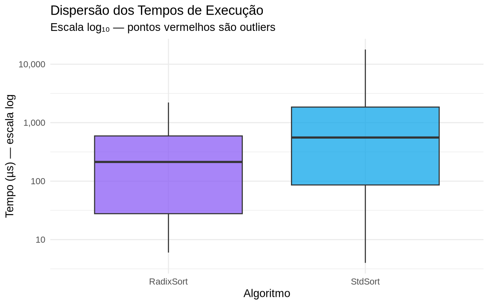
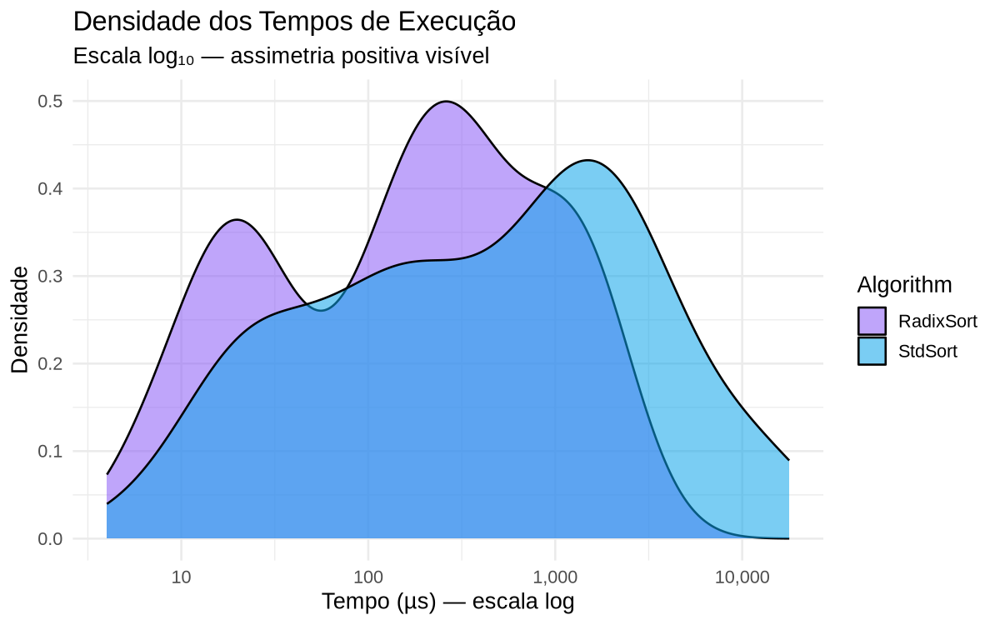
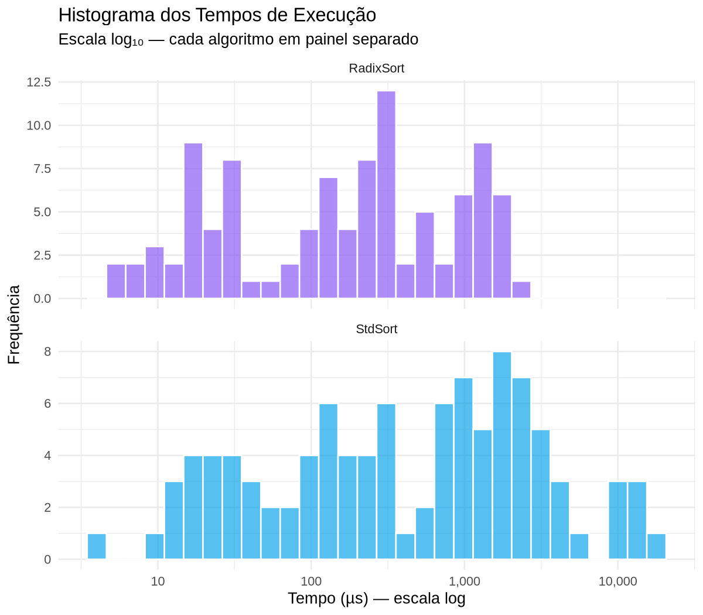
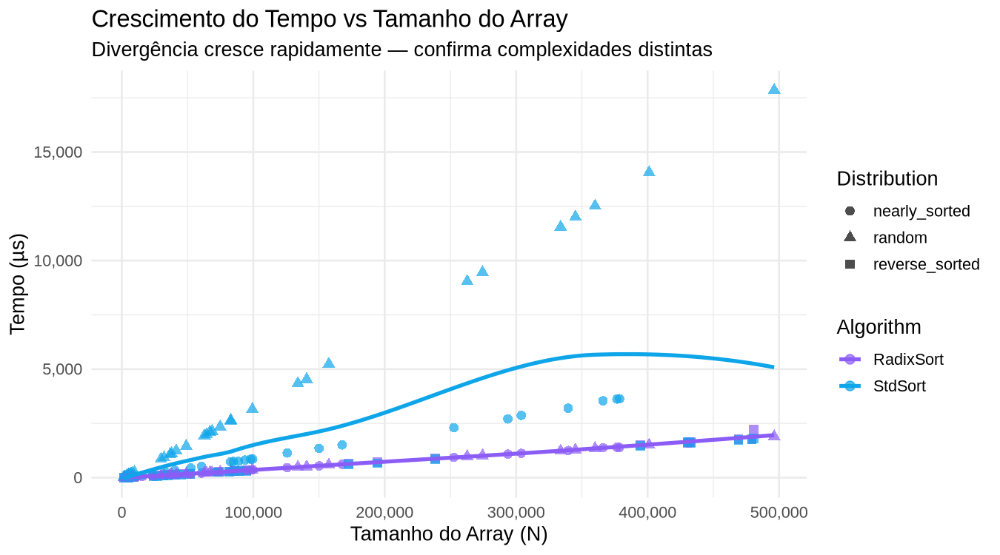
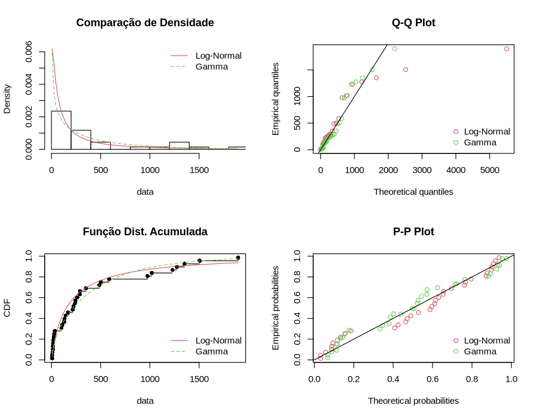

Trabalho Integrado · Engenharia Eletrônica
Radix Sort (LSB)
vs std::sort do C++
Estudo estatístico completo comparando a latência de dois algoritmos de ordenação em arquiteturas modernas, integrando análise descritiva, inferência e modelagem probabilística.
Seção 1
Fundamentos e Metodologia
Definição do objeto de estudo, população-alvo, procedimento de coleta e classificação das variáveis.
Objeto de estudo e população-alvo
Investigamos a latência de execução (tempo em µs) de dois algoritmos de ordenação implementados em C++. A população-alvo é o conjunto de todas as execuções possíveis desses algoritmos sobre arrays de inteiros com tamanhos variando entre 1.000 e 500.000 elementos, em hardware x86-64 moderno.
Objetivo da análise
Verificar, com rigor estatístico, se o Radix Sort (não-comparativo, $O(N \cdot k)$) apresenta latência significativamente menor que o std::sort do C++ (comparativo, $O(N \log N)$) — e quantificar essa diferença. Avaliar também o impacto do tipo de distribuição inicial do array no desempenho.
Amostra e procedimento de coleta
- N = 100 pares de execuções (200 medições no total)
- Cada par usa o mesmo array, garantindo dados pareados
- Medição via
<chrono>em C++ com resolução de microssegundos - Amostragem estratificada por tipo de distribuição inicial e faixa de tamanho
- Três estratos de tamanho: pequeno (1K–10K), médio (11K–100K), grande (101K–500K)
Justificativa do tamanho amostral
100 pares é suficiente para: (1) garantir o Teorema Central do Limite para os testes paramétricos; (2) representar os três estratos de tamanho e três tipos de distribuição com densidade adequada; (3) detectar efeitos de tamanho moderados com poder estatístico $\geq 0{,}80$.
Seção 4 — Classificação das variáveis
| Variável | Tipo | Subtipo | Papel | Valores possíveis |
|---|---|---|---|---|
| Algorithm | Qualitativa | Nominal | Fator | RadixSort, StdSort |
| Distribution | Qualitativa | Nominal | Fator | random, nearly_sorted, reverse_sorted |
| ArraySize | Quantitativa | Discreta | Covariável | 1.290 a 473.740 elementos |
| Time_us | Quantitativa | Contínua | Dependente | ≥ 0 µs (latência medida) |
| ArrayID | Qualitativa | Nominal | Identificador | 1 a 100 (vincula pares) |
Seção 2
Estatística Descritiva
O alto coeficiente de variação reflete os três estratos de tamanho: arrays pequenos e grandes coexistem, gerando assimetria positiva acentuada. Os outliers são arrays do estrato grande com distribuição random.
Média (µs)
Mediana (centro real)
Desvio Padrão
Coef. de Variação
Moda (valor + frequente)
Q1 — Quartil inferior
Q3 — Quartil superior
Variância




Seção 3
Inferência Estatística
Intervalo de confiança e três testes de hipótese. Nível de significância adotado: $\alpha = 0{,}05$.
t.test(radix_data$Time_us)① Teste T — Uma Amostra
Avalia se a média do Radix Sort difere significativamente de uma referência de 200 µs. Paramétrico, pressupõe normalidade (válido pelo TCL para N=100).
$H_1$: $\mu_{radix} \neq 200\ \mu s$
t.test(radix, mu=200)—
② Wilcoxon Pareado — Duas Amostras
Comparação não-paramétrica entre as medianas dos dois algoritmos. Usa os pares (mesmo array), eliminando variabilidade de tamanho.
$H_1$: $\tilde{\mu}_{radix} < \tilde{\mu}_{std}$ (Radix é mais rápido)
wilcox.test(..., paired=T, alternative="less")$H_0$ rejeitada. Radix Sort é estatisticamente mais rápido.
③ ANOVA — Três Grupos
Testa se o tipo de distribuição inicial (random / nearly_sorted / reverse_sorted) afeta o tempo do Radix Sort. Aplica-se pois há 3+ grupos.
$H_1$: Ao menos uma média difere
aov(Time_us ~ Distribution, data=radix_data)—
Seção 4
Modelagem Probabilística
Variável modelada: tempo do Radix Sort em arrays random (pior cenário — distribuição mais irregular). Parâmetros estimados por Máxima Verossimilhança (MLE) e comparados pelo Critério de Akaike (AIC).
Características preliminares
Assimetria > 0 confirma cauda positiva. Curtose elevada indica presença de outliers — ambos apontam para distribuição Log-Normal ou Gamma.
Comparação AIC — menor = melhor ajuste
Probabilidades calculadas com a distribuição ajustada — contexto: arrays aleatórios de tamanho médio-grande.
Risco de latência alta
Execução rápida
Faixa típica
Pior caso em 90% dos testes

Seção 5
Simulação Visual dos Algoritmos
Compare intuitivamente por que as complexidades divergem. O comparativo avalia pares (vermelho); o distributivo agrupa por dígito sem comparar.
Seção 6
Conclusão
Síntese das três etapas — descritiva, inferência e modelagem — aplicadas ao estudo de performance de algoritmos.